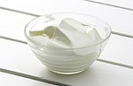

光冈知足：益生菌的可能性
通过摄取具有代表性的含益生菌食品酸奶等，可增加肠道里栖息的有益菌双叉乳杆菌的繁殖，抑制魏氏梭菌等有害菌，调节肠道内细菌的均衡，使肠胃环境转好。这可通过粪便中腐败产物的减少，大便的臭味减少得以确认。栖息在肠道内的双叉乳杆菌所产生的乳酸和醋酸能刺激肠道，激活肠道的蠕动运动，通便也会变得顺畅。这对预防大肠癌和乳腺癌也很有效。这是“调理肠胃状态（整肠作用）食品”所认可的标示内容。 |
 |
另外，虽然尚未得到认可进行内容标示，但在与益生菌有关的学术会议上，已对以下作用形成了认识。
- ●钙和乳酸结合，提高钙的吸收率。
- ●从蛋白质摄取通过乳酸发酵生成的约4倍于牛乳的必需氨基酸，消除肝脏的疲劳，增强肝脏的功能。
- ●富含维生素A和B2，能提高胃粘膜的抵抗力，起到修复作用。
- ●含有维生素A、B1、B2、泛酸、生物素和胆碱等，有助于恢复疲劳和滋润皮肤。
- ●具有均衡的营养成分和出色的助消化吸收能力，最适合婴幼儿、患者和老年人等的营养补给。
- ●有降低血液中胆固醇的作用。
- ●酸奶中含有乳三肽等成分，能积极预防高血压。
- ●乳酸菌的菌体本身可提高免疫力。
- ●与食物纤维起着同样作用的乳酸菌菌体成分，可改善肠道菌群的平衡，抑制血糖值的急剧上升，对糖尿病具有预防和治疗效果。
- ●活的乳酸菌本身具有乳糖分解酵素，因其分解乳糖，对喝牛奶腹痛腹泻体质者来说，喝酸奶的话是安全的。
最近的研究成果显示，这些益生菌的功效实际上不会受到乳酸菌死亡的影响（死亡的乳酸菌与活菌有着同样的作用）。